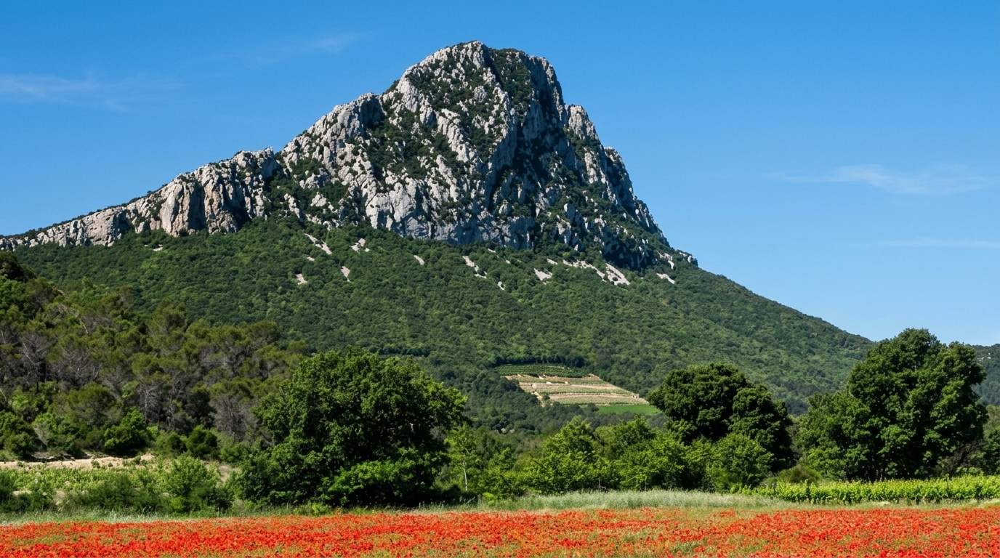

🌿 Découvrez Montpellier et sa région
Entre patrimoine historique, art de vivre méditerranéen, plages, vignobles et villages remarquables.
🏡 Le Plan des 4 Seigneurs
Situé au nord de Montpellier, le Plan des 4 Seigneurs est l'un des quartiers résidentiels les plus appréciés de la métropole.
Son nom provient des anciennes terres agricoles qui étaient historiquement partagées entre plusieurs familles seigneuriales. Aujourd'hui, il offre un environnement calme, verdoyant et recherché, à quelques minutes seulement du centre-ville.
Entouré par le Bois de Montmaur, le Parc du Lunaret, le Zoo de Montpellier et les rives du Lez, le quartier constitue un point de départ idéal pour découvrir la région tout en profitant d'un cadre paisible.
🌞 Montpellier, capitale du soleil
🏛 Centre historique
Flânez dans l'Écusson, le cœur historique de Montpellier, avec ses ruelles médiévales, ses hôtels particuliers et ses places animées.
🎭 Place de la Comédie
Véritable symbole de la ville, elle rassemble cafés, restaurants, commerces et animations tout au long de l'année.
🌳 Promenade du Peyrou
Un magnifique espace offrant une vue panoramique sur la ville et les paysages environnants.
🎓 Ville universitaire
Montpellier possède l'une des plus anciennes facultés de médecine du monde et une ambiance jeune et dynamique toute l'année.
🍷 Art de vivre
Gastronomie, vins du Languedoc, culture et climat méditerranéen font de Montpellier une destination particulièrement agréable.
🌊 Les incontournables autour de Montpellier
🏰 Aigues-Mortes
Magnifique cité médiévale fortifiée fondée par Saint Louis. Ses remparts parfaitement conservés offrent une immersion unique dans l'histoire du Moyen Âge.
⛵ La Grande-Motte
Station balnéaire célèbre pour son architecture avant-gardiste, ses longues plages de sable fin et son port de plaisance.
🏖 Palavas-les-Flots
Ancien village de pêcheurs devenu station balnéaire familiale, idéal pour profiter de la Méditerranée.
🦩 La Camargue
Un territoire unique où vivent flamants roses, chevaux camarguais et taureaux en liberté.
🍇 Vignobles du Languedoc
Certains des meilleurs domaines viticoles du sud de la France se trouvent à quelques kilomètres seulement de Montpellier.
⛰ Saint-Guilhem-le-Désert
Classé parmi les Plus Beaux Villages de France, ce joyau médiéval est niché au cœur des gorges de l'Hérault.
⭐ Pourquoi choisir cette région ?
✅ Plus de 300 jours de soleil par an
✅ Mer Méditerranée à moins de 30 minutes
✅ Patrimoine historique exceptionnel
✅ Vignobles renommés
✅ Nature préservée et villages pittoresques
✅ Activités pour toute la famille